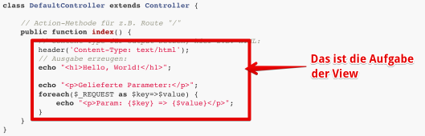

{% extends "../_base_template.html" %}
{% block title %}Lektion 4 - Web-MVC-Architektur{% endblock %}

{% block sections %}
<section data-markdown>
<textarea data-template>
<i class="fas fa-graduation-cap"></i> M151 - DB in Web-App einbinden
=============================

Heutiges Ziel
--------------

* Sie haben die Grundstruktur MVC verstanden
* Sie können die Grundstruktur für Ihr MVC-Web-Framework in Code umsetzen:
  * Request, Dispatching/Routing, Controller/Action-Methode, Response (HTML, Views)
* Ihr Framework kann mit einer Response (View) antworten.

</textarea>
</section>

<section data-markdown>
<textarea data-template>
<i class="fas fa-graduation-cap"></i> Response - Views
=============================

Wir erinnern uns: Das MVC-Design-Pattern teilt die Verantwortlichkeiten von Code in:

* **M**odel (Daten)
* **V**iew  (Ansicht)
* **C** (Logik)

<i class="far fa-hand-point-right"></i> Uns fehlt nun noch das **V**, also die Views.

Aus Sicht des Backends, also des PHP-Programms: Was ist dabei als "View" zu verstehen?
</textarea>
</section>

<section data-markdown>
<textarea data-template>
<i class="fas fa-graduation-cap"></i> Response - Views
=============================

Die **View** aus Server-Sicht ist das, was der Browser zur Anzeige / zur Ausgabe von Daten benötigt.
Dies kann somit sein:

* HTML-Ausgabe
* maschinenlesbare Daten (z.B. JSON)
* dynamisch generierte Bilder / Dokumente

<div style="display:flex;justify-content: space-around;align-items: center">
    
    
    
</div>

Diese Views werden also von unserem (PHP-)Backend "produziert": Die Web-Applikation ist dafür zuständig, diesen Inhalt (diese Views) zu generieren und auszuliefern.

<i class="far fa-hand-point-right"></i> Was ist mit statischen Dateien / Bildern? Müssen diese auch vom
PHP-Backend prozessiert werden? Wer liefert diese aus?
</textarea>
</section>

<section data-markdown>
<textarea data-template>
<i class="fas fa-graduation-cap"></i> Erzeugen von View-Output in einer Controller-Action-Methode
=============================

Wie reagiere ich im Controller auf Anfragen (Requests)?

Innerhalb der Action-Funktion ist man grundsätzlich frei:
Hier kann getan werden, was immer notwendig ist, und eine entsprechende
Ausgabe erzeugen. Ein Beispiel (DefaultController, Funktion index):

Hier wird aufgrund der Route der `DefaultController` mit der Funktion `index()` aufgerufen.
Diese Funktion erzeugt dynamisch generiertes HTML (die "View"):

```php
class DefaultController extends Controller {

    // Action-Methode für z.B. Route "/"
    public function index() {
        // Content-Type für Output setzen, hier z.B. HTML:
        header('Content-Type: text/html');
        // Ausgabe erzeugen:
        echo "<h1>Hello, World!</h1>";

        echo "<p>Gelieferte Parameter:</p>";
        foreach($_REQUEST as $key=>$value) {
            echo "<p>Param: {$key} => {$value}</p>";
        }
    }
}
```
</textarea>
</section>

<section>
<section data-markdown>
<textarea data-template>
<i class="fas fa-graduation-cap"></i> Abstrahieren der View-Erzeugung
=============================

Wir erinnern uns an das MVC-Design-Pattern:


MVC **separiert** die Verantwortlichkeiten:

* Der **Controller** ist für die Logik zuständig, nicht für die Ausgabe:
* Er bereitet die Daten auf (**Model**), und gibt diese der
* **View** weiter für die Darstellung.

Im vorherigen Code-Beispiel hat nun aber auch der Controller die Ausgabe, also die View erzeugt.
Wir wollen dies weiter abstrahieren, um im Sinne von MVC die Logik von der View-Ereugung zu trennen.


</textarea>
</section>

<section data-markdown>
<textarea data-template>
<i class="fas fa-graduation-cap"></i> Abstrahieren der View-Erzeugung
=============================


Das Erzeugen von dynamischem HTML ist eine Aufgabe, die immer wieder vorkommt (eigentlich bei jedem
Request). Unser Ziel soll sein, **diese Aufgabe somit einer `View`-Klasse zu übergeben**.
Im Controller wollen wir nur noch die notwendigen Daten (das **Model**) aufbereiten und der View übergeben:

```php
    # Klasse DefaultController:
    public function index() {
        // Instanzieren einer neuen View, mit Angabe eines (HTML-)Templates:
        $view = new View('default-demo.html');

        // Übergeben der Daten (aka "Model") an die View:
        $view->assign('datum',strftime('%d.%m.%Y'));
        $view->assign('params',$_REQUEST);

        // View "rendern" (HTML erzeugen lassen):
        $view->render();
    }
```

* In der Action-Funktion wird die Klasse "View" instanziert. Dabei wird ein HTML-Template (eine Vorlage mit Platzhaltern) angegeben.
* Der View-Klasse werden Daten, welche für die Ausgabe notwendig sind, zugewiesen (assign)
* Die Ausgabe wird mit „render()“ erzeugt.

**Eine sehr rudimentäre View-Klasse finden Sie auf Moodle**: Studieren Sie diese, damit Sie deren Funktion
kennen lernen / verstehen.

Das HTML-Template ist ein Stück HTML, welche die übergebenen Daten der View in der `render()`-Methode
in PHP-Schnipseln verarbeitet. Es wird dabei ebenfalls vom PHP-Interpreter abgearbeitet und hat Zugriff
auf die zugewiesenen Daten:

```php
# Datei 'default-demo.html':
<h1>Hello, World!</h1>
<p>aktuelles Datum: <&#x200b;?php echo $datum; ?></p>
<h2>Params:</h2>
<ul>
    <&#x200b;?php
    foreach($params as $key=>$value) { ?>
    <li>
        <&#x200b;?php echo $key.': '.$value; ?>
    </li>
    <&#x200b;?php } ?>
</ul>
```

</textarea>
</section>

<section data-markdown>
<textarea data-template>
<i class="fas fa-graduation-cap"></i> Abstrahieren der View-Erzeugung: Template-Engine
=============================

Das Erzueugen von (HTML-)Views ist ein grundlegendes Problem, zu dem es bereits viele Lösungen gibt: so genannte **Template Engines**
sind dafür optimiert, Daten und View-Template zu trennen, und auszugeben.

Ein Beispiel ist [Smarty](https://smarty.net), eine ausgereifte Template engine.

**Installation mit Composer**

Sie installieren Smarty einfach mit composer:

```
$ composer require smarty/smarty
```

**Verwendung im Controller**

```php
class MyController {
    public function myAction() {
        $view = new Smarty();                                // Smarty instanzieren
        $view->setTemplateDir(__DIR__ . '/../../views/');    // Wo liegen die Template-Files?
        $view->assign('zeit', time());                       // Daten (Model) in der View registrieren
        $view->assign('daten', ['was' => 'anderes']);
        $view->display('smarty-demo.html');                  // Template rendern
    }
}
```

**Beispiel-View / Template: gibt die zugewiesenen Daten aus:**

```html
<!-- smarty-demo.html -->
<h1>Hello, World!</h1>
<p>Es ist: {$zeit|date_format:'d.m.Y'}</p>
<h2>Params:</h2>
<ul>
{foreach $daten as $key=>$value}
    <li>{$key}: {$value}</li>
{/foreach}
</ul>
```

Eine Template-Engine trennt sauber die Controller- und View-Schicht voneinander und macht das Erzeugen von
dynamischen Views sehr einfach und übersichtlich.

</textarea>
</section>
</section>

<section data-markdown>
<textarea data-template>
<i class="fas fa-graduation-cap"></i> Aufgabe: Abstrahieren der View-Erzeugung
=============================

## Aufgabe

Entwickeln Sie nun, eine eigene View-Infrastruktur zu entwickeln.
Ziel ist, dass Ihre Controller von der View-Erzeugung "befreit" werden:
Dies ist das Grundkonzept von MVC.

### Entweder: selber

Versuchen Sie, wie vorhin aufgezeigt, eine View-Klasse zu entwickeln, welche:

* Daten entgegennehmen kann
* eine Vorlage (Template) verwendet und daraus
* mittels z.b. `render()`-Methode den fertigen Output generiert.

### Oder: Template-Engine verwenden

Dieses Problem haben natürlich schon andere gelöst: Es gibt mittlerweile
diverse so genannte "Template Engines", welche Ihnen diese Aufgabe abnehmen.

Mit `composer` lassen sich diese Libraries ganz einfach installieren und verwenden. Schauen
Sie sich z.B. folgende Engines an:

* [Smarty](https://www.smarty.net/): Sehr mächtig, schon gut "gereift"
* [Twig](https://twig.symfony.com/): Teil des Symfony-Frameworks, modern
* [Blade](https://github.com/jenssegers/blade): Teil vom Laravel-Framework, kann aber auch separat verwendet werden

**Ich stelle Ihnen frei, ob Sie eine Template Engine verwenden wollen,
oder ob Sie selber eine entwickeln.**
</textarea>
</section>
{% endblock %}
